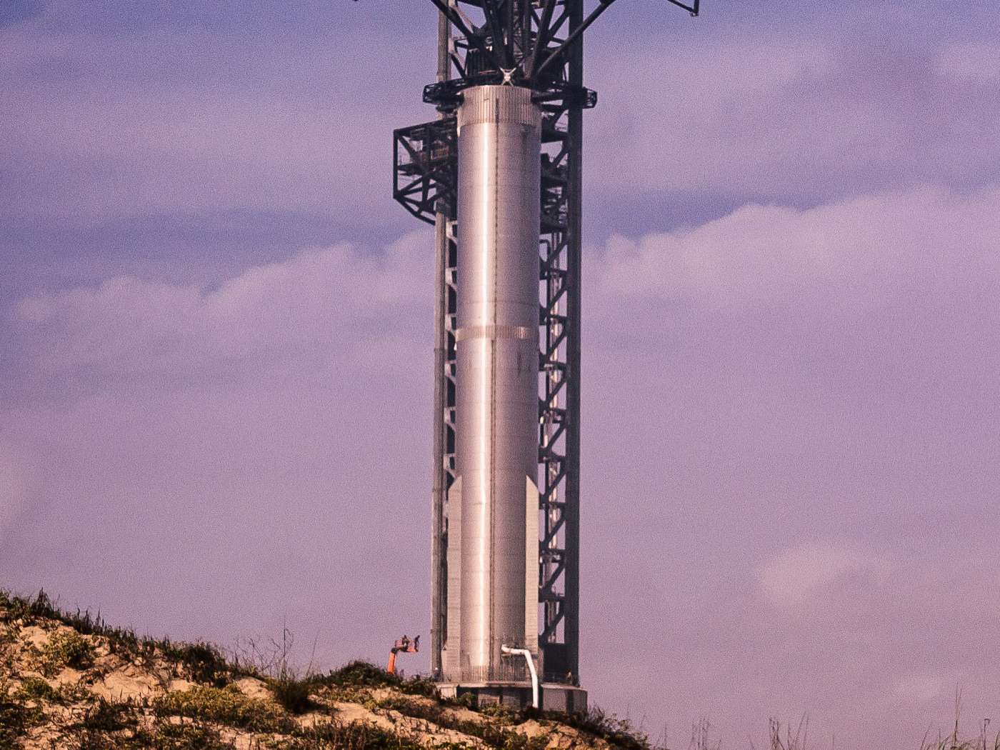
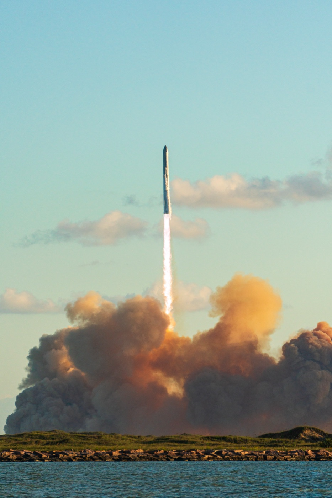
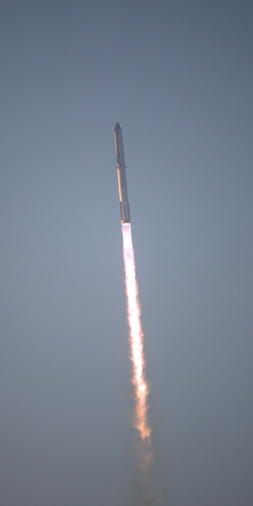

Let 1
NeúspechRaketa stratila riadenie ešte pred oddelením stupňov a štart vážne poškodil rampu.

Starship je dvojstupňový raketový systém spoločnosti SpaceX, najväčšia a najvýkonnejšia raketa v histórii.
Oba stupne sú navrhnuté na úplné opakované použitie: obrovský booster sa po štarte vracia k štartovacej veži a horná loď má raz pristávať rovnako.
Má vynášať veľké družice Starlink, dopraviť astronautov NASA na Mesiac v programe Artemis a neskôr aj ľudí na Mars.
Raketa má dva stupne postavené na sebe. Čísla v schéme zodpovedajú kartám vpravo.
Vlastná zjednodušená schéma, nie je v presnej mierke.
Horná časť so šiestimi motormi, ktorá letí až na obežnú dráhu a nesie náklad, palivo alebo v budúcnosti posádku.
Obrovský booster s 33 motormi, ktorý loď vynesie do výšky asi 70 km a potom sa vráti späť k štartovacej veži.
Priestor v prednej časti lode, z ktorého sa cez bočný otvor vypúšťajú družice Starlink.
Dve menšie pohyblivé plochy pri špičke, ktorými loď riadi svoju polohu pri páde atmosférou.
Tisíce čiernych keramických dlaždíc chránia jednu stranu lode pred teplotou okolo 1 400 °C pri návrate.
Väčší pár klapiek pri spodku lode, ktorý spolu s prednými udržiava stabilný „brušný“ let atmosférou.
Prstenec s otvormi, cez ktoré unikajú plyny, keď loď zapáli motory ešte pred oddelením od boostera.
Štyri mriežkové plochy navrchu boostera ho pri návrate navigujú a slúžia aj na zachytenie ramenami veže.
Väčšinu oboch stupňov tvoria nádrže s kvapalným metánom (CH₄) a kvapalným kyslíkom (LOX).
Motory spaľujúce metán s kyslíkom, ktoré sa dajú vo vesmíre opakovane zapáliť a pri pristávaní riadiť.
Od prvého štartu v apríli 2023 až po prvý let na obežnú dráhu v septembri 2026 a lety plánované do konca roka. Stav k 19. 10. 2026.
Raketa stratila riadenie ešte pred oddelením stupňov a štart vážne poškodil rampu.
Stupne sa prvýkrát oddelili, no booster sa stratil po výpadku motorov a loď zničil autodeštrukčný systém po požiari.
Loď dosiahla plánovanú dráhu; booster zlyhal pri pristávacom zážihu a loď sa pri návrate rozpadla.
Oba stupne prvýkrát riadene dosadli na hladinu oceánu, loď asi 6 km od cieľa.
Štartovacia veža prvýkrát zachytila vracajúci sa booster svojimi ramenami.
Booster odklonili do mora, loď prvýkrát pristála na hladine za denného svetla.
Prvý let verzie 2: veža booster zachytila, loď sa stratila po úniku paliva.
Booster opäť zachytený vežou, loď stratila riadenie aj spojenie.
Prvé opätovné použitie boostera; booster sa stratil a loď sa po úniku paliva rozpadla.
Booster riadene dosadol na hladinu a loď pristála len 3 metre od cieľa.
Posledný let verzie 2, oba stupne leteli riadene a loď pristála v cieli.
Premiéra verzie 3 a novej rampy 2; loď vypustila makety družíc a riadene pristála, booster dopadol na vodu príliš rýchlo.
Booster sa stratil pri pristávacom zážihu, loď riadene dosadla na hladinu a prežila aj prevrátenie.
Prvý let na obežnú dráhu: loď vypustila 26 družíc Starlink V3 napriek výpadku jedného motora a vrátila sa skôr, než bolo plánované.
Ďalší let na nízku obežnú dráhu; možný je aj prvý pokus o zachytenie lode vežou, zatiaľ nepotvrdený.
Podľa veľmi predbežných plánov prvý štart z Floridy s družicami Starlink.
Termíny budúcich letov sú predbežné a SpaceX ich často posúva.
Pri štarte naraz zaberie 33 motorov boostera. Je to najsilnejší ťah, aký kedy raketa vyvinula.


Video zo štartu zo Starbase v Texase, ktoré zverejnil kanál VideoFromSpace (Space.com).
Ak sa video vyššie nespustí, otvorte ho priamo: youtube.com/watch?v=s2U54BS25bE